ML-guided mutagenesis and sequence-to-function modeling walkthrough
This section is intended as a simple walkthrough of the OpenProtein.AI web app and the tools it provides for analyzing mutagenesis datasets, training sequence-to-function prediction models, using those models to predict properties for new sequences, and designing optimized libraries of sequence variants. This walkthrough uses a deep mutational scanning dataset of an aliphatic amide hydrolase from Pseudomonas aeruginosa generated by Wrenbeck et al..
You may download the dataset here.
Upload a dataset
After creating your project, you will be prompted to upload a dataset. You can do so by clicking “Upload dataset” in the navigation panel or the project landing page will open a file explorer from which you can select your dataset file.
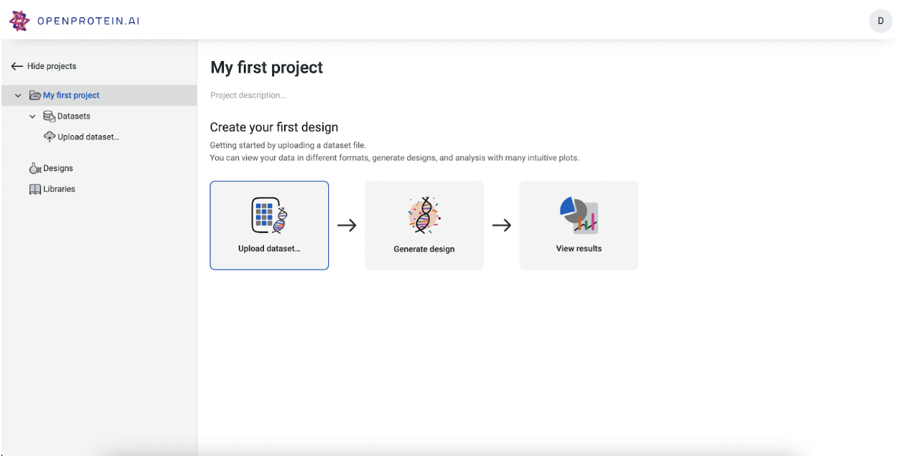
We’ll use AMIE_PSEAE_Whitehead, a deep mutational scanning dataset from Wrenbeck et al which is included as a demo dataset with this walkthrough. This dataset has activity measurements for single substitution mutants of aliphatic amidase from Pseudomonas aeruginosa on three substrates (acetamide, isobutyramide, and propionamide). This enzyme catalyzes the hydrolysis of short-chain aliphatic amides into carboxylates and ammonia.
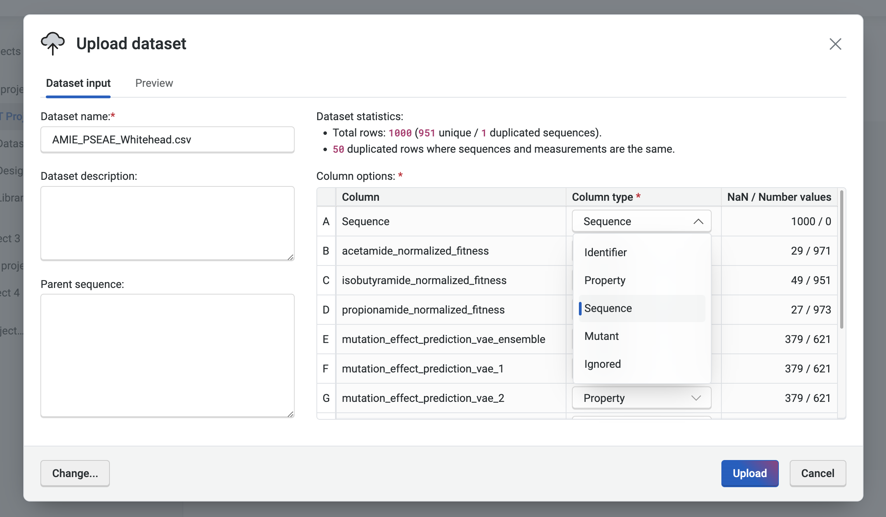
By default, it will be the name of your uploaded file but you have the option of renaming your dataset . You can also add an optional description. If you selected the wrong file by accident, the “Change…” button will take you back to the file explorer to select a different file.
A Mutagenesis dataset is expected to be uploaded as a CSV formatted table. It should have one column containing the full sequence of each variant and additional columns with measurement values associated with each variant.
It’s ok if some of the variants are missing measurements.
Your sequence variants can also be specified using typical mutation codes (e.g., M1A or R25L, encoding an M->A substitution at position 1 or R->L substitution at position 25, respectively). If your table has mutation codes, you will also need to specify the full wildtype sequence in the “Sequence options” dropdown. The app will use this to enumerate the full sequence of each variant.
The app will try to auto-detect your sequence column based on the column name. If it can’t find the column, you can manually select it in the “Sequence options” dropdown.
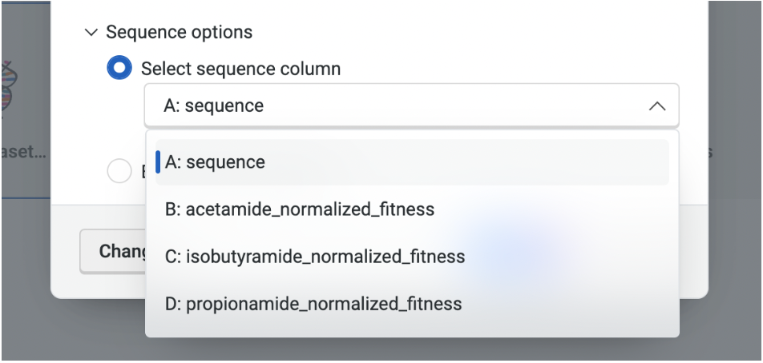
If your table has variants encoded using mutant codes, you need to include the wildtype sequence of your protein.
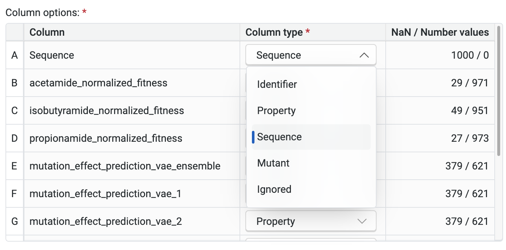
When you click “Upload,” your dataset will appear in the Datasets section of the navigation panel and you will be redirected to a new page for your dataset.
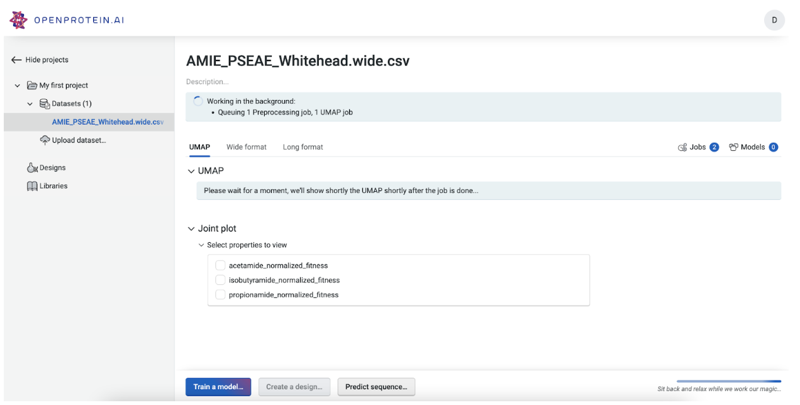
Job status
View the status of your jobs in the jobs panel on the right side of the page.
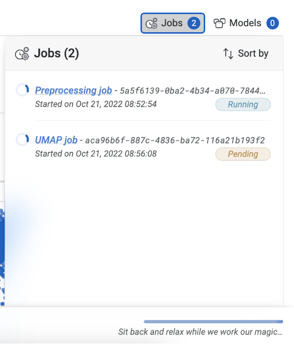
Visualizations
The UMAP creates a 2D visualization of the manifold of your sequence variants that best reflects the similarities between your sequences in the high-dimensional feature space. You may find out more about UMAPs here
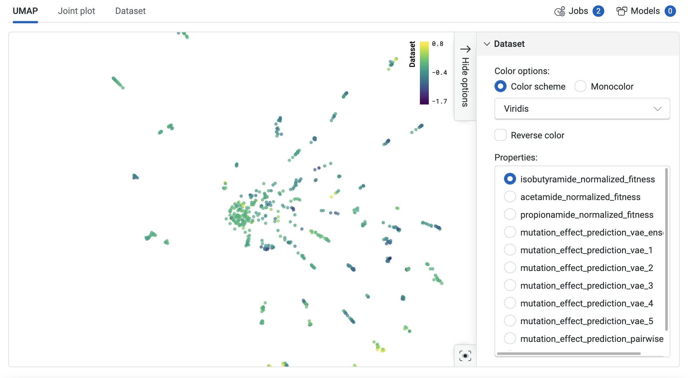
In this case, we see a star-like pattern, which reflects the fact that this dataset is single variants of the central wildtype sequence. Mutagenesis datasets with higher diversity or that are generated in less systematic ways (e.g., via selection), will tend to display different cluster structures in the UMAP plot.
The points are colored by their corresponding property values in your dataset. The “UMAP options” panel allows you to change the color scheme, reverse the color scheme, and toggle between multiple properties.
In the meantime, you can select properties to view a joint plot showing pairwise relationships between them in your dataset.
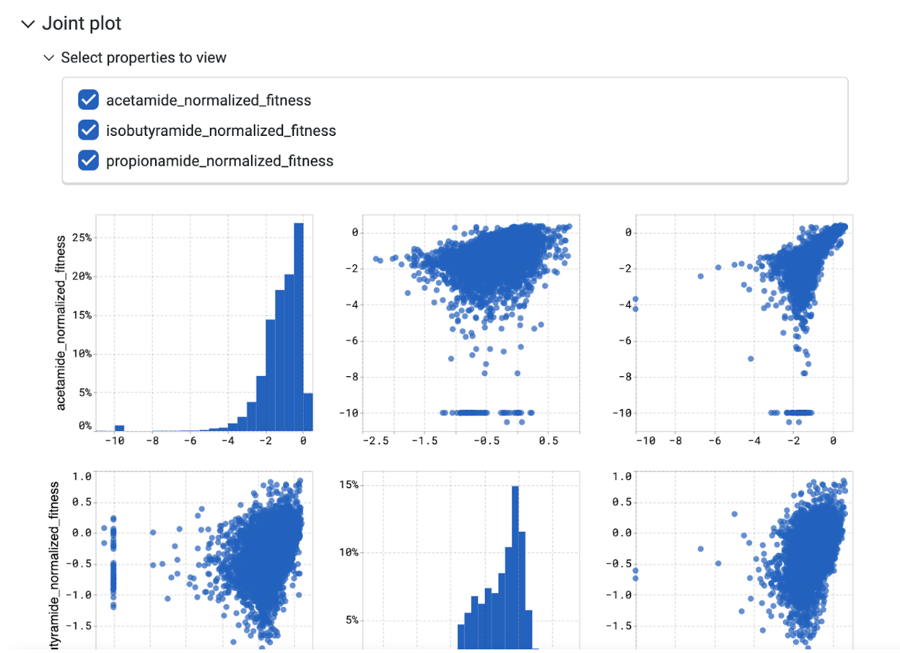
The “Dataset” tab will show your mutagenesis dataset table, allows some simple filtering and sorting of the variants, and allows you to download your dataset as a CSV with the “Export…” button.
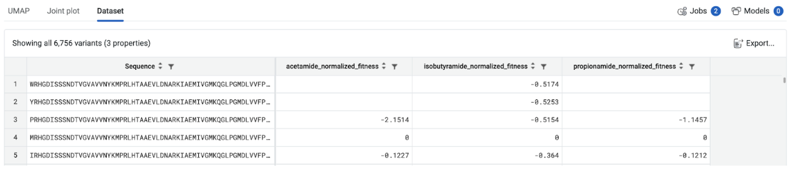
Training model on mutagenesis dataset Next, we will train sequence-to-function prediction models on your mutagenesis dataset to predict your property(ies). These models can be used later on to make predictions for new sequence variants and to design libraries of optimized sequences. Click “Train a model…” to open the model training options panel. You can name your model and select which properties you want to be able to predict. We’ll call our model “Model” and fit it for all three properties here.
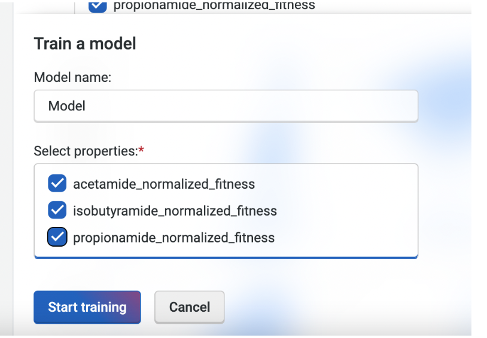
Click “Start training” and you’ll see two new jobs added to your jobs panel.
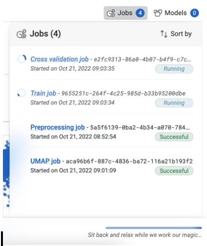
Once your models finish training, they will appear in the models panel. Your models will be named according to the name you entered in the training options and the property each model predicts.
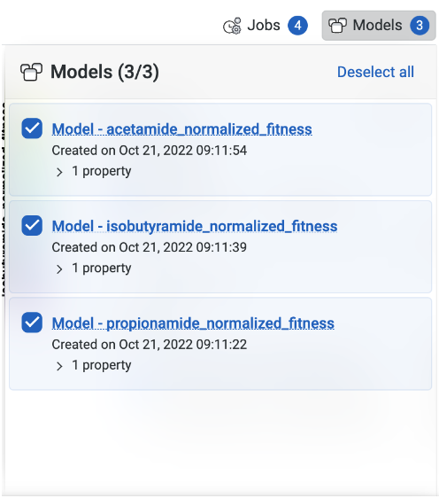
Model diagnostics and cross validation
The app will also automatically evaluate the predictive performance of these models using cross validation once the models finish training. Navigate to the “Diagnostics” tab to see training curves and cross validation of the models.
For cross validation, we split your variants into 5-folds, and, for each fold, fit the model on the other 4, then make predictions on the heldout fold. The cross validation plots show the predicted properties versus your actual measured properties for each variant in your dataset when it was heldout. Here, we can see that the model predictions correlate strongly with the ground truth measurements, indicating that these models are able to accurately predict substrate activity for unseen sequence variants.
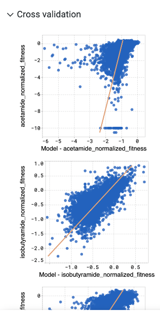
Make predictions and analyze single variant properties
Once you have trained models, these models can be used to predict those properties for sequence variants of interest. This allows you to explore specific variants and see their predicted properties and also to examine the predicted properties of all single substitution variants of a parent sequence.
Running a prediction
Click “Predict sequence…” or right click a sequence in the variants table and select “Predict this sequence” to go to the prediction page. Here, we sort by isobutyramide activity and select the variant with highest activity to analyze single site variants of.
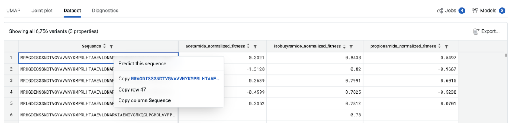
This page allows you to enter an arbitrary variant sequence and make property predictions for that sequence and all single variants of it using your trained models.
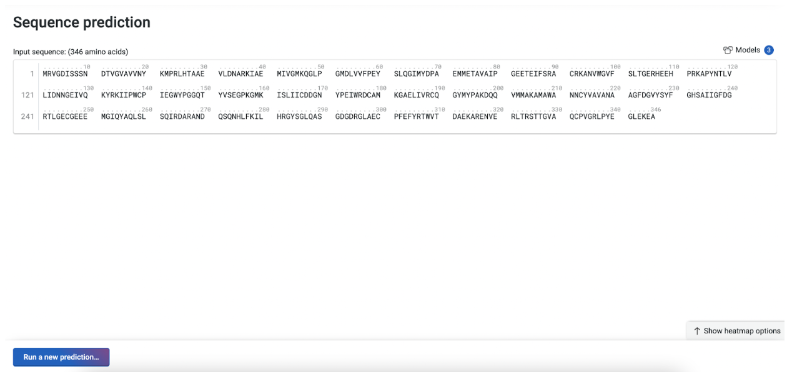
Click “Run a new prediction…”, select your models, and click run. This may take a few minutes if the system is busy. Feel free to navigate away. Next time you come back to this sequence, the prediction results will be stored so they can be retrieved quickly later.
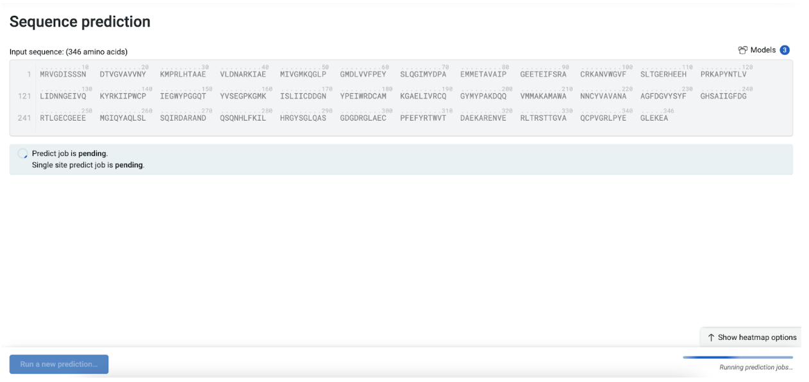
Examining predict results
When the predict job completes, you’ll see a table with predicted property values and standard deviations for your query sequence. You’ll also see a heatmap showing the favorability of each single substitution mutant of your query sequence based on their predicted properties.
Important: open the “Show heatmap options” drawer. Here, you can edit the definition of the variant score based on the predicted property values. You can set whether a property should be greater than, less than, or as close as possible to a target value which you can set for each property. You can also toggle properties on and off using the check marks and change how the individual properties are weighted in the score. See the note on design criteria below in the “Design optimized variants” section for more information. The right side of the panel shows the relationship between variant scores and the color map. You can change the min, mid, and max values to adjust the color scaling of the heatmap.
For this dataset, let’s look for variants likely to have activity >1 on all three substrates. We also set the min score for the colormap to -20 to get better color resolution of the possible variants.
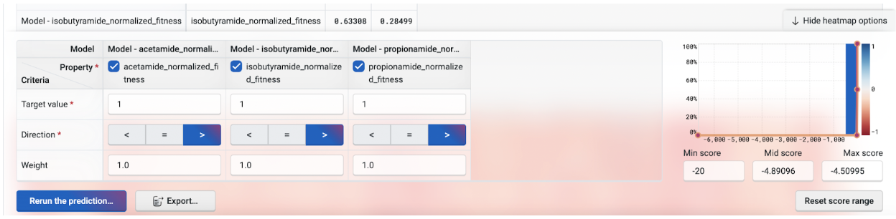
Since we started with a high activity sequence, we can see that most variants are predicted to be less likely to achieve our design criteria. These are colored red by default.
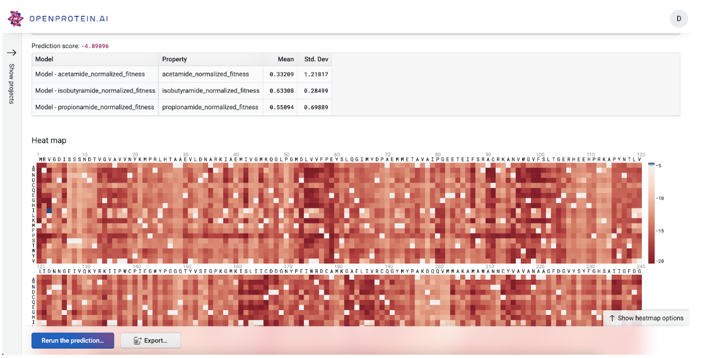
There’s only one variant that our models predict are more likely to achieve the design objective than, which is colored blue. Hovering that cell of the heatmap will show more information about it.
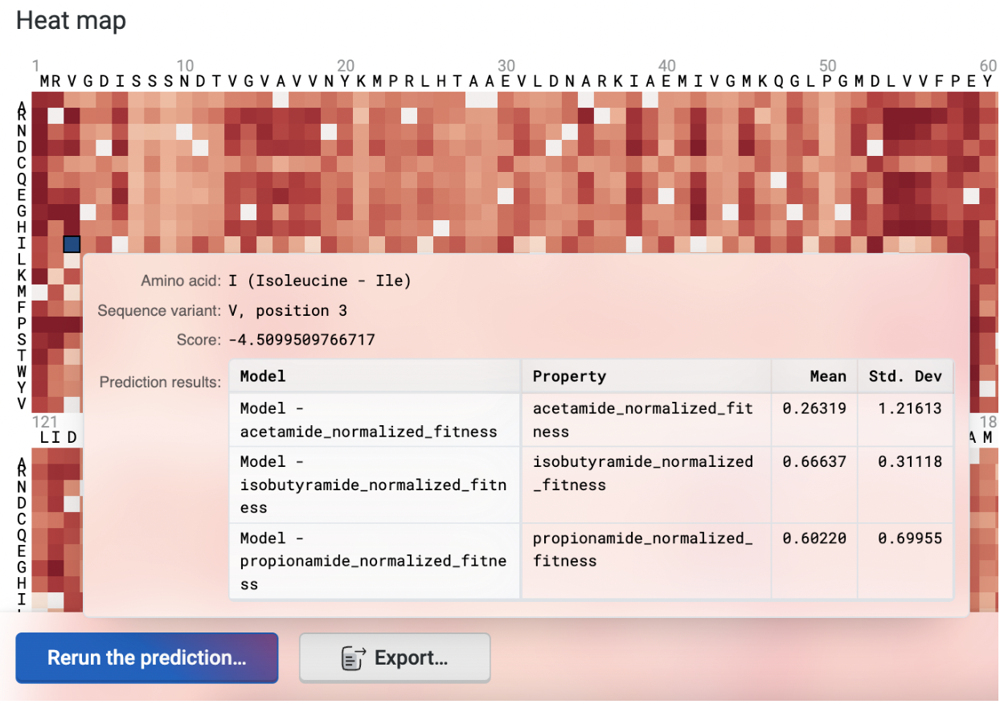
You can look for variants that might be better for other design objectives by editing the scoring criteria in the heatmap options drawer. For example, if we look only at isobutyramide, we can find some other substitutions that might be beneficial.
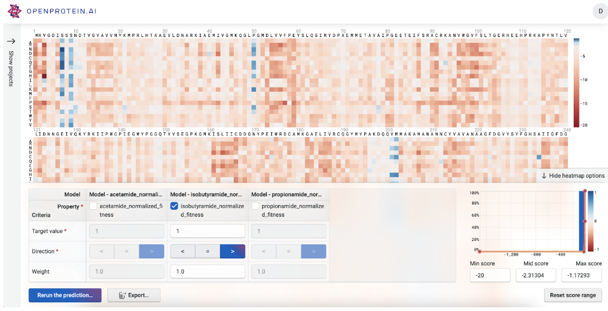
You can download the single site predictions as a CSV table with the “Export” button.
Designing optimized variants
Predict is useful if you want to understand the predicted properties and single mutant potentials for some specific sequences. But what if you don’t know what the best base sequence is or want to design a library of higher order mutants that optimally trade off your properties and explore sequence space? That’s what the design module is for.
Running the design tool
Return to the dataset page and select “Create a design…” This will take you to a new page where you can define your design objectives and then the platform will search for sequence variants most likely to achieve those objectives.
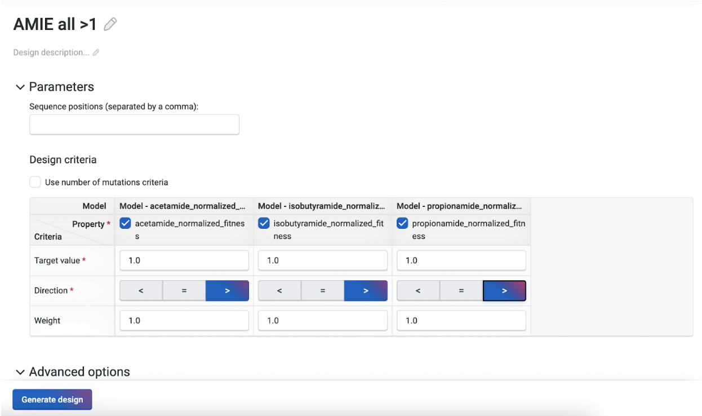
Here, we want to look for variants likely to have activity >1 on all substrates. You can edit the name of this design run in the name text box. We’ve changed it to “AMIE all >1.” You can also specify specific positions within the sequence to mutate. If you don’t, all positions will be considered. The single site potentials found on the predict page can be a useful way to identify a limited number of positions, but we’ll just consider all positions here. You can also set the design algorithm to find optimal variants at shells of similarity to your dataset by selecting the “Use number of mutations criteria” option. This can be helpful if you want to explore tradeoffs between the number of mutations in each variant and the predicted properties. When a criteria is set for multiple properties, the algorithm will search for variants that fall along the Pareto front of those criteria. More information on the design criteria can be found here.
By default, the design algorithm will run for 10 steps. If you want to generate more candidate sequences and give the algorithm more time to find, potentially, better variants, this can be increased. Let’s set it to 20.
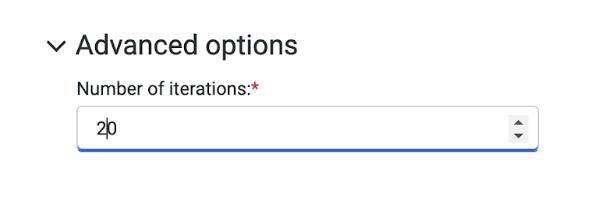
Then click “Generate design” to start the algorithm. This will save the design so it’s accessible from the navigation panel. It can take some time for the algorithm to run. Once it starts, you’ll be able to see results as they are generated by the algorithm.
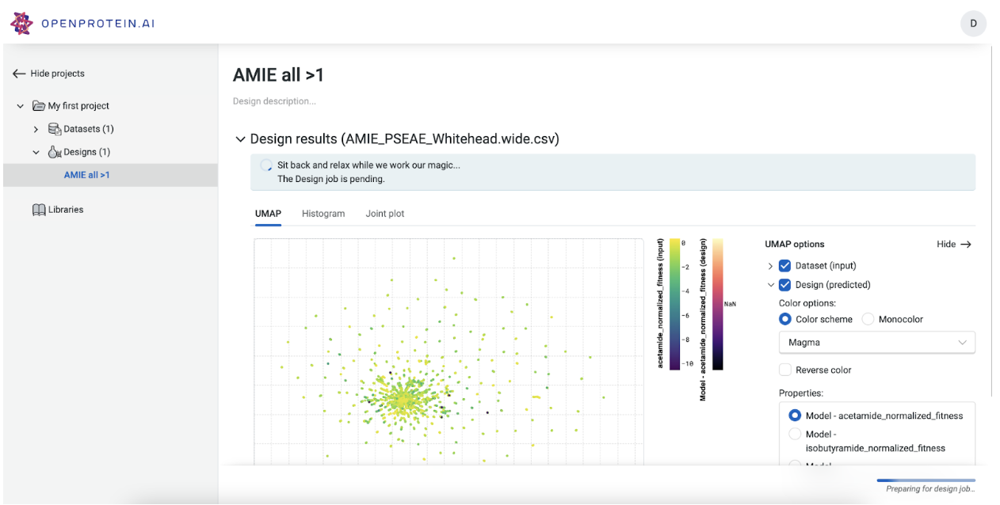
Examining design results
As results are being generated and once the algorithm finishes, you’ll see the variant sequences generated by the design process overlaid on the UMAP. You can adjust the color settings and change the property the new points are colored by in the color options panel. The designed sequences are colored by predicted property.
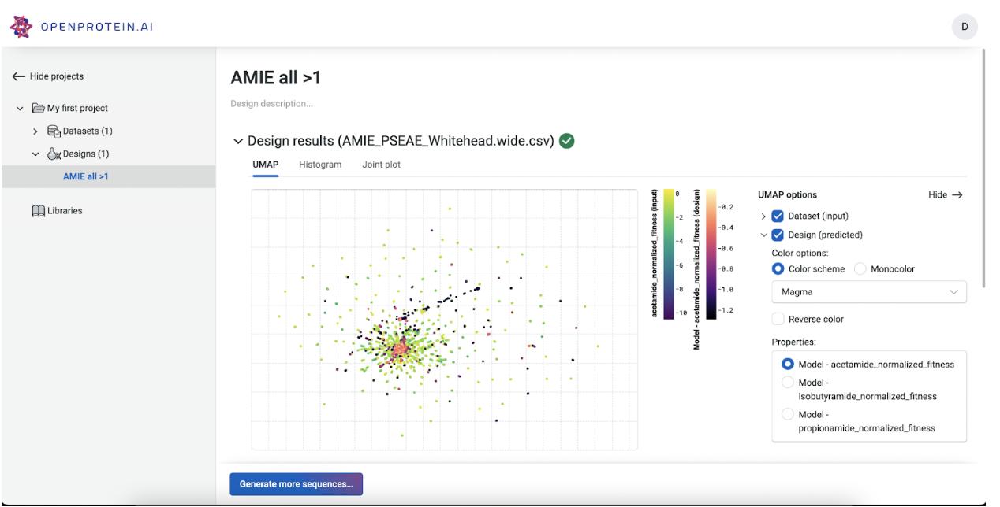
You can view histograms comparing the expected property distributions for the designs against your original library and joint plots for all of the properties in the “Histogram” and “Joint plot” tabs.
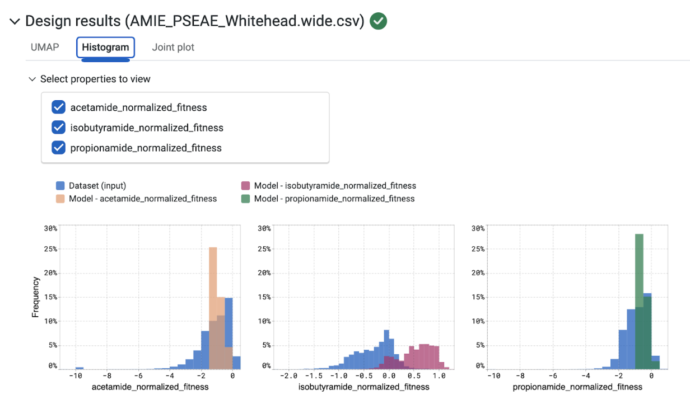
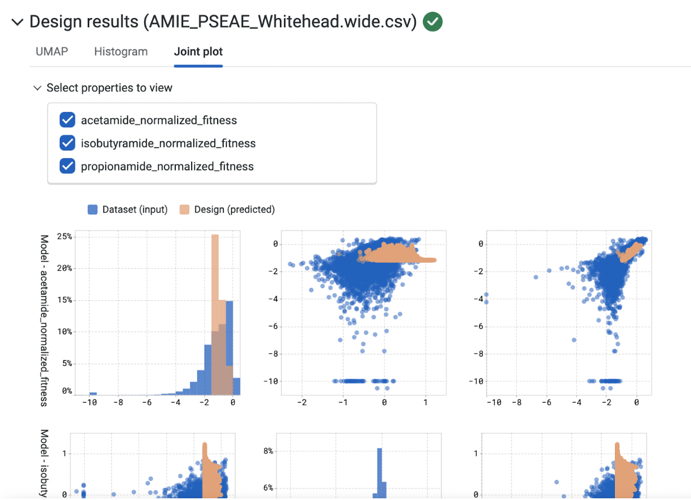
Note that these show all sequences in the design table, not just the best.
Below the plots, you can see the table of the generated sequences. The design algorithm may not generate all unique sequences at every step, so you can filter the table to only show unique sequences using the option in “Advanced filters.” You can sort the sequences by predicted property and the score assigned to each according to your design criteria. For score, larger (closer to zero) is better.
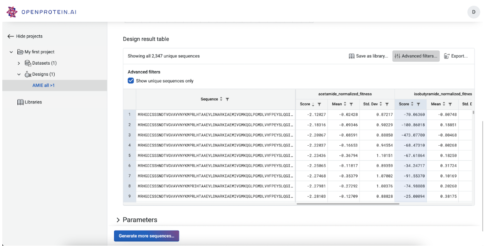
The filter icon next to each column name also allows you to set simple filters that can be applied to the designs.
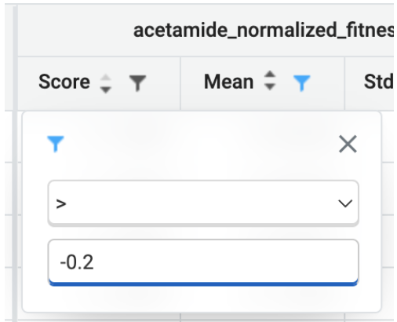
You can now download designs and save as a library accordingly.
That’s it! Now you can download your designed sequence variants to perform any additional analysis and synthesize your library!